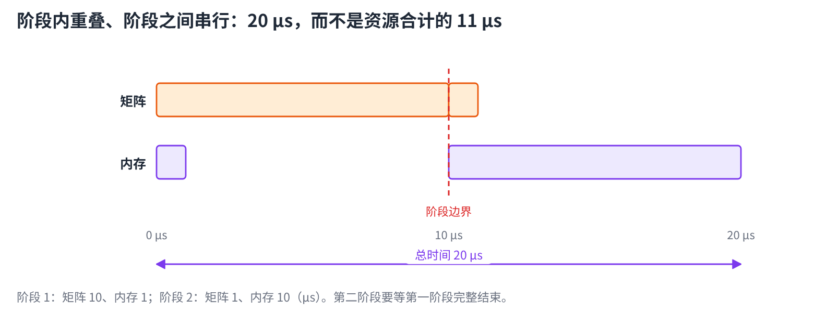
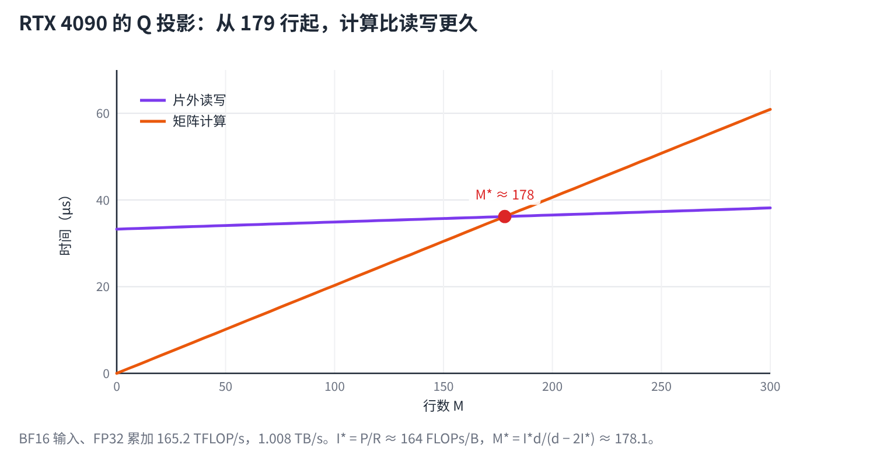
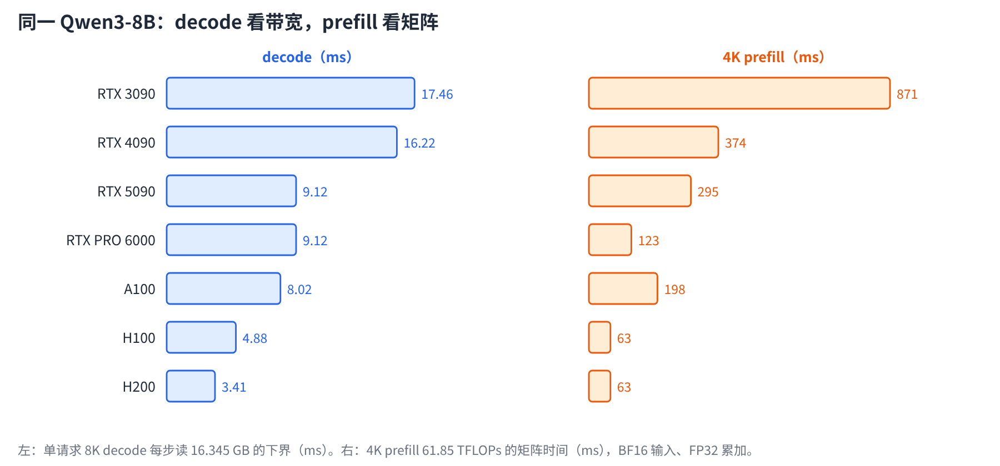
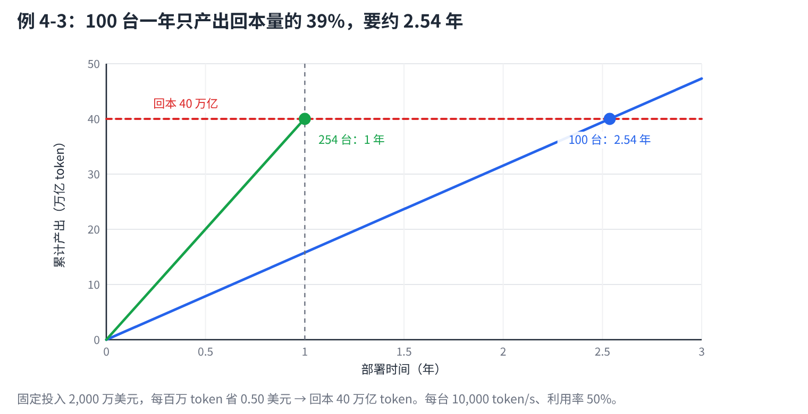
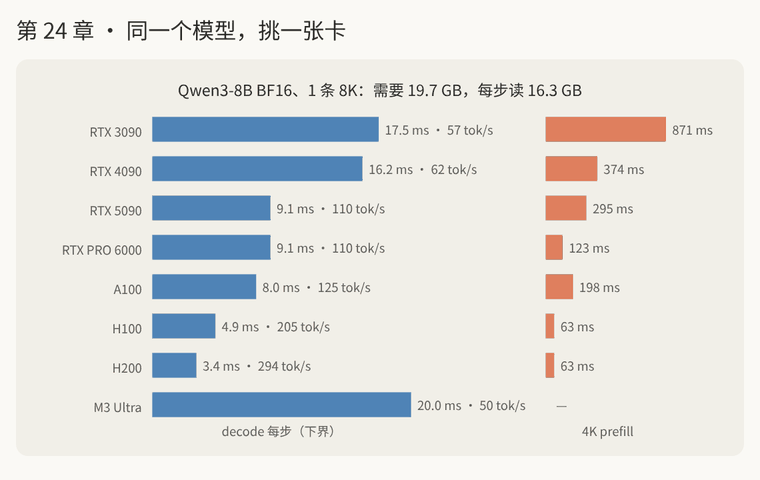

第 24 章 · 根据架构选择加速器：先估下界，再找差距，最后算账
本地运行
git clone https://github.com/wikieden/ai-infra-from-constraints
cd ai-infra-from-constraints/code/notebooks
pip install jupyterlab torch numpy
jupyter lab ch24_choose_accelerator.ipynb也可以下载后直接用 VS Code 打开 .ipynb 运行。需要 GPU 的章节在 Colab 里选「代码执行程序 → 更改运行时类型 → GPU」。
本章回答：一段程序在一张卡上要跑多久，怎么从资源表估出来？同一个模型放到 4090、5090、H100、H200 上，哪张卡赢在哪个阶段？实测比估算慢三倍时，慢在哪？专用芯片要卖多少 token 才回本？
讲解日期：2026-11-24 · 上一章：第 23 章 架构演进与专用架构 · 下一章：第 25 章 提交、搬移与同步
对应原文：materials/ai-infra-book/manuscripts/04-加速器架构.md§4.8 L960–L1259（图 4-39 到 4-42，例 4-3）及本章小结
本章缩写：eager = 急切执行模式（逐个 kernel 启动、不做图捕获）· GEMM = General Matrix Multiply（通用 / 矩阵 / 乘法）· GEMV = General Matrix-Vector multiply（通用 / 矩阵 / 向量乘法）· MBU = Memory Bandwidth Utilization（内存 / 带宽 / 利用率）· MFU = Model FLOPs Utilization（模型 / 浮点运算 / 利用率）· split-K = 沿内积维 K 切分再归约 · TGP = Total Graphics Power（显卡总功耗）。全部缩写见 缩写与术语表
第四部分前五章讲的是硬件有什么。本章把它们收成一套方法：估时间 → 比设备 → 对实测 → 算成本。
讲解
第一步：执行时间模型：同一资源相加，不同资源取最大，依赖串起来（2026-11-24）
类比：做一顿饭。 同一个灶上炒的菜，时间相加；灶和烤箱能同时开，看哪个久；可是汤要等肉炖好才能下锅，这两步只能先后来。
三条关系（原文 L970–L982）：
- 共享资源相加：权重和 KV 共用内存接口，流量相加；QK 和 PV 共用矩阵单元，时间相加。
- 独立资源取最大：矩阵和搬移同时推进，最慢的那个决定下限。
- 依赖要分阶段：第一阶段矩阵 10 μs、内存 1 μs，第二阶段反过来，阶段之间必须先后：\(10 + 10 = 20\) μs。只看合计，矩阵和内存各 11 μs，会少算 9 μs。

图 24-1 · 差出的 9 μs 是第一阶段的矩阵和第二阶段的内存没法重叠。
速率要选对：RTX 4090 的 Tensor Core，FP16 累加约 330 TFLOP/s，FP32 累加约 165 TFLOP/s。8.59 GFLOPs 按两种算是 26 μs 和 52 μs，而读取约 37 μs：选哪个速率，直接决定谁是瓶颈。
Roofline 转折点（原文 L986–L1013）：\(P_{\mathrm{attainable}} \le \min(P, RI)\)，交点 \(I^* = P/R\)。代入第 19 章的投影强度 \(I(M) = Md/(d + 2M)\)：
4090 BF16 / FP32 累加：\(I^* = 165.2 / 1.008 \approx 164\) FLOPs/B，\(M^* \approx 178.1\)。
| \(M\) | 矩阵 | 读写 | 主导 |
|---|---|---|---|
| 1 | 0.20 μs | 33.3 μs | 内存 |
| 256 | 52 μs | 37.4 μs | 矩阵 |

图 24-2 · 低于转折点用 MBU 衡量，高于转折点用 MFU 衡量（第 4 章）。roofline 的推导见《CUDA 从线程到 Tensor Core》第 9 章。
一句话：同一资源相加，不同资源取最大，阶段依赖串联；速率要按实际精度选。
第二步：同一个模型比较设备：decode 看带宽，prefill 看矩阵（2026-11-24）
类比：选车。 天天在市区堵车（decode：每步读完整权重），看起步和变道；跑长途（prefill：一次算几千个 token），看发动机功率。
原文 L1021–L1048：Qwen3-8B、BF16、单请求、8K 上下文：
- 每步 decode 读 16.345 GB；矩阵工作 13.89（线性层）+ 4.832（QK / PV）+ 1.245（输出头）≈ 19.97 GFLOPs。
- 4K prefill：线性层按 4,096 个 token、因果注意力 \(4096 \times 4097 / 2\) 对，合计约 61.85 TFLOPs。
| 卡 | 容量 | decode 读取下界 | 读取上限 | 4K prefill 矩阵 |
|---|---|---|---|---|
| RTX 3090 | 24 GB | 17.46 ms | 57.3 token/s | 871 ms |
| RTX 4090 | 24 GB | 16.22 ms | 61.7 token/s | 374 ms |
| RTX 5090 | 32 GB | 9.12 ms | 109.6 token/s | 295 ms |
| RTX PRO 6000 | 96 GB | 9.12 ms | 109.6 token/s | 123 ms |
| A100 80GB | 80 GB | 8.02 ms | 124.7 token/s | 198 ms |
| H100 SXM | 80 GB | 4.88 ms | 205.0 token/s | 62.5 ms |
| H200 SXM | 141 GB | 3.41 ms | 293.7 token/s | 62.5 ms |

图 24-3 · 3090 → 4090：decode 只快 7.1%，prefill 快 57.0%。A100 → H100：decode 快 39.1%，prefill 快 68.5%；H100 → H200 只快 decode。
容量先筛掉一批：单请求预算约 19.737 GB，24 GB 卡装得下；八条 8K 请求约 28.193 GB，就要 5090 以上。
Qwen3-235B-A22B（4-bit、单请求）：需要约 126.9 GB，消费级卡单卡都装不下；M3 Ultra 256 GB 和 H200 141 GB 可以。每步读 13.697 GB：M3 Ultra 约 16.72 ms（59.8 token/s），H200 约 2.85 ms（350.4 token/s）。Ultra 让它能在一台本地机器上跑，H200 把每步缩到约 1/6。
一句话：先按容量筛，再按阶段看：长输入看矩阵速率，持续生成看带宽。
第三步：预测和实测差在哪：先修口径，再去开销（2026-11-24）
类比：导航说 20 分钟，实际开了 55 分钟。 先看是不是导航算错了路（口径），再看是不是一路等红灯（开销）。
一次真实生成（原文 L1054–L1060）：RTX PRO 6000、vLLM、eager、batch 1、8K。读取下界 9.12 ms，实测三轮中位数 25.83 ms，下界只占 35.3%（这就是 MBU），多出约 16.7 ms。
- 不是读取慢：2K 上下文每步少读 0.906 GB，应省约 0.51 ms，实测 26.26 ms 反而没变短。
- batch 一大就回来了：batch 64、2K 每步读 34.46 GB，下界 19.23 ms，实测 29.63 ms，等效 1.16 TB/s，MBU 65%。
- 所以 batch 1 时主要是一段和读取量无关的固定工作：kernel 逐个启动、向量运算、采样、同步。要减它靠 kernel 融合和少启动（第 5 部分），不是提高带宽利用率。
一次投影的实测（原文 L1064–L1087）：RTX PRO 6000，16 份内容相同、地址不同的 32 MiB 权重：
| \(M\) | 复用同一地址 | 轮换不同地址 | DRAM 读取 |
|---|---|---|---|
| 1 | 42.9 μs | 51.9 μs | 都约 32 MiB |
| 256 | 32.6 μs | 33.5 μs | 复用 256 B / 轮换 32.1 MiB |
- 单行慢 21% 不是缓存省了 DRAM：两种情况 DRAM 都读了 32 MiB。差别要到提交、执行、等待里去找。
- 256 行时缓存把 DRAM 读取几乎降到 0，时间却没变：L2 请求仍有约 147 MiB，片上一样要搬。
- 库把一次乘法拆成了多个 kernel：单行是 GEMV，256 行是 GEMM + split-K 归约。按"全部从片外读"的模型，下界只有 18.7 / 21.1 μs。
拆差距的公式（原文 L1089–L1097）：
两个任务都是 100 μs、理想计算 40 μs：一个工作 40 μs、等 60 μs（该补的是数据准备和重叠，像第 21 章两槽变三槽）；另一个工作 80 μs、速率只有一半（该改的是粒度和访问，像第 20 章补齐和分组）。比值都是 40%，药方相反。
场景代码：用 PyTorch Profiler 看一次投影到底拆成了哪几个 kernel、各占多久（真实 API）：
import torch
from torch.profiler import profile, ProfilerActivity
x = torch.randn(256, 4096, device="cuda", dtype=torch.bfloat16)
w = torch.randn(4096, 4096, device="cuda", dtype=torch.bfloat16)
with profile(activities=[ProfilerActivity.CUDA]) as prof:
for _ in range(16):
y = x @ w.T
torch.cuda.synchronize()
print(prof.key_averages().table(sort_by="cuda_time_total", row_limit=5)) # 看 gemm 与 splitK reduce
一句话：实测比下界慢时，先查模型口径（缓存、kernel 拆分），再查实现开销（启动、同步）；把"工作时快不快"和"有多少时间在工作"分开看。
第四步：算账：每任务成本、能耗、专用化回本（2026-11-24）
类比：打车。 贵一倍的车如果快一倍以上，这一趟反而便宜；买一辆专车，要跑够多少趟才比打车划算。
每任务成本（原文 L1107–L1113）：按时间计费，
把小时成本换成功率，比的就是每任务能耗。RTX PRO 6000 按 600 W 上限：单行一次约 25.8 mJ，256 行约 19.6 mJ。Mac 要在能耗上赢，单行时平均功率得低于约 155 W，256 行时得低于约 10.7 W：同一台机器，只是矩阵变大，门槛降了十几倍。
每步能耗：4090 450 W × 16.22 ms ≈ 7.30 J；5090 575 W × 9.12 ms ≈ 5.24 J。功率高 28%，每步能耗反而低 28%。长期服务要用总耗电 ÷ 有效产出，把空闲和预热都算进去；生成速度翻倍、利用率减半，每 token 成本不变（\(c / (3600 u q)\)）。
专用化回本（例 4-3）：
固定投入 2,000 万美元，每百万 token 省 0.50 美元：回本要 \(4 \times 10^{13}\) token。100 台、每台 10,000 token/s、利用率 50%，一年产出约 \(1.58 \times 10^{13}\)，只有回本量的 39%。
| 条件 | 一年内回本至少要 |
|---|---|
| 寿命一年、利用率 50% | 254 台 |
| 寿命半年 | 508 台 |
| 利用率降到 25% | 508 台 |

图 24-4 · 100 台每年约省 788 万美元，要约 2.54 年才回本，而模型一年就换了。
一句话：快的贵卡不一定贵；专用化要在模型寿命内卖够 \(F_0/\Delta c\) 个 token。
动画演示：同一个模型，挑一张卡

可交互版：animations/24-choose-accelerator.html（切换：Qwen3-8B / 235B-A22B 4-bit；滑块：并发请求 1–16）。
怎么看：
- 七张卡各一行，左段是 decode 每步读取下界，右段是 4K prefill 矩阵时间（第二步）；
- 容量不够的卡变灰，标"放不下"；
- 并发请求变多，KV 和预算一起涨，24 GB 卡最先变灰；
- 切到 235B，只有 H200 和 M3 Ultra 还亮着。
练习与作答记录
题 1（第一步）：三个阶段：(矩阵 4、内存 6)、(矩阵 8、内存 2)、(矩阵 3、内存 3) μs，阶段内可重叠、阶段之间串行。总时间多少？只看资源合计会估成多少？
作答记录：（待作答）
题 2（第一步）：一张卡矩阵 400 TFLOP/s、带宽 2 TB/s，\(d = 4096\) 的 BF16 投影，转折点 \(M^*\) 是多少？带宽翻倍后呢？
作答记录：（待作答）
题 3（第二步）：一个模型 decode 每步读 30 GB、4K prefill 要 120 TFLOPs。在 H100 和 H200 上各要多久？哪个阶段换 H200 有收益？
作答记录：（待作答）
题 4（第四步）：固定投入 500 万美元，每百万 token 省 0.20 美元；每台 5,000 token/s、利用率 40%、模型寿命 9 个月（按 273 天）。至少要多少台才能在寿命内回本？
作答记录：（待作答）
原书实验 4-5 到 4-8（L1015、L1099、L1145、L1149）是扩展的推导和测量题，想多练可以做。
口诀
同一个灶相加，灶和烤箱取最大，汤等肉就串着来；
堵车看起步（带宽），长途看马力（矩阵）；
导航不准先改路，再数红灯；
贵车快一倍就不贵，专车要跑够趟数才回本。
本章复习卡片
I92（相加、取最大、阶段串联：20 vs 11 μs）、I93（\(M^* = I^* d / (d - 2I^*)\)，4090 是 178.1）、I94（decode 看带宽、prefill 看矩阵的设备对比）、I95（MBU 35.3% vs 65% 与 \(S/T = S/A \times A/T\)）、I96（\(c_A/c_B < t_B/t_A\) 与回本 \(F_0/\Delta c\)）。练习做完后，按答错、卡住的地方再补。
附录 · 延伸阅读
留给以后深入学习用，不影响本章主线。★ 是建议先读的。
推荐阅读
| 读什么 | 读哪里 | 读它为了什么 |
|---|---|---|
| ★ AII 第 4 章 | §4.8 L960–L1259、本章小结 | 本章原文，图 4-39 到 4-42 |
| 《CUDA 从线程到 Tensor Core》第 9、27 章 | roofline、Nsight 方法论 | 实测拆分的工具 |
| Williams、Waterman、Patterson，Roofline，CACM 2009 | 全文 | roofline 原始出处 |
| AII 第 8 章 实验 8-1 | batch 扫描 | 第三步 vLLM 实测的来源 |
| AII 第 1 章 §1.2.2、§1.3.4 | MFU / MBU、两类差距 | 利用率的定义 |
| 第 18 章 规模与生命周期 | 生命周期成本 | 回本账的前置 |
数学原理
- max-plus：阶段内 \(\max\)，阶段间 \(\sum\)；只算 \(\max_r \sum\) 会低估。
- Roofline 反解：\(I(M) = Md/(d + 2M) = I^*\) 解出 \(M\)。
- 比值分解：\(S/T = (S/A)(A/T)\)，把效率拆成"速率"和"占空"。
- 回本：\(V^* = F_0/\Delta c\)，寿命内产出 \(D u q L \ge V^*\) 解出 \(D\)。
公式清单
| 公式 | 意思 |
|---|---|
| \(T_r = \sum_i w_{r,i}/p_{r,i}\) | 同一资源相加 |
| \(T = \sum_{\text{阶段}} \max_r T_{r}\) | 阶段依赖 |
| \(M^* = I^* d / (d - 2 I^*)\)，\(I^* = P/R\) | 投影转折行数 |
| \(S_r / T = (S_r/A_r)(A_r/T)\) | 差距拆分 |
| \(K_A < K_B \iff c_A/c_B < t_B/t_A\) | 每任务成本 |
| \(V^* = F_0 / \Delta c\)，\(D \ge V^* / (u q L)\) | 专用化回本 |
代码对照：把本章的数字用代码算一遍
纯 Python，不需要 GPU。代码在仓库本地
ai-infra/solutions/chapter-code/ch24_choose_accelerator.py，配套测试tests/test_ch24.py：
bash cd ai-infra/solutions/chapter-code uv run python ch24_choose_accelerator.py # 一步一步打印 uv run pytest tests/test_ch24.py
讲义 ↔ 代码：
| 讲义 | 公式 | 写法 | 跑出来 |
|---|---|---|---|
| 第一步 阶段 | \(\sum \max\) | staged_time(stages) |
20 μs vs 合计 11 μs |
| 第一步 转折 | \(I^* d / (d - 2I^*)\) | turning_rows(165.2e12, 1.008e12) |
178.1 |
| 第二步 设备 | \(V/R\)、\(F/P\) | device_table() |
16.22 / 9.12 ms；7.1 / 57.0 / 39.1 / 68.5% |
| 第四步 成本 | \(c_A/c_B < t_B/t_A\) | cheaper(...) |
|
| 第四步 回本 | \(F_0/\Delta c\) | breakeven(20e6, 0.5, 100, 10_000, 0.5) |
\(4 \times 10^{13}\)、254 台、508 台 |
关键几行：
def staged_time(stages):
total = sum(max(s.values()) for s in stages) # 阶段内并行取最大，阶段间串行相加
...
def turning_rows(p, r, d=4096):
i = p / r # I* = P/R
return i * d / (d - 2 * i)
代码里才看得到的 3 件事：
decode_flops的每层参数 \(2 \cdot 4096^2 + 2 \cdot 4096 \cdot 1024 + 3 \cdot 4096 \cdot 12288\)：K、V 只有 8 个头 × 128 = 1,024 宽（第 9 章 GQA）。- 600 W × 42.9 μs 代码得 25.7 mJ，原文 25.8 mJ：原文用的是未取整的实测时间。
- 回本的机器数用上取整：\(4 \times 10^{13} / 1.577 \times 10^{11} = 253.7\)，所以是 254 台。
自己改一改（不影响练习答案）：
- 给
DEVICES加一行 B200（180 GB、8 TB/s、约 2.25 PFLOP/s BF16 稠密），看 decode 和 prefill 各排第几。 - 把
staged_time的第二阶段改成可以和第一阶段部分重叠，总时间怎么变？ - 改
breakeven的利用率，画出机器数随利用率的曲线。